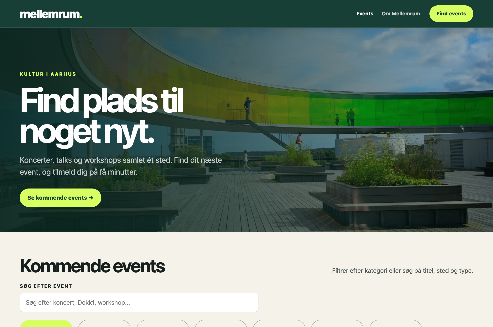
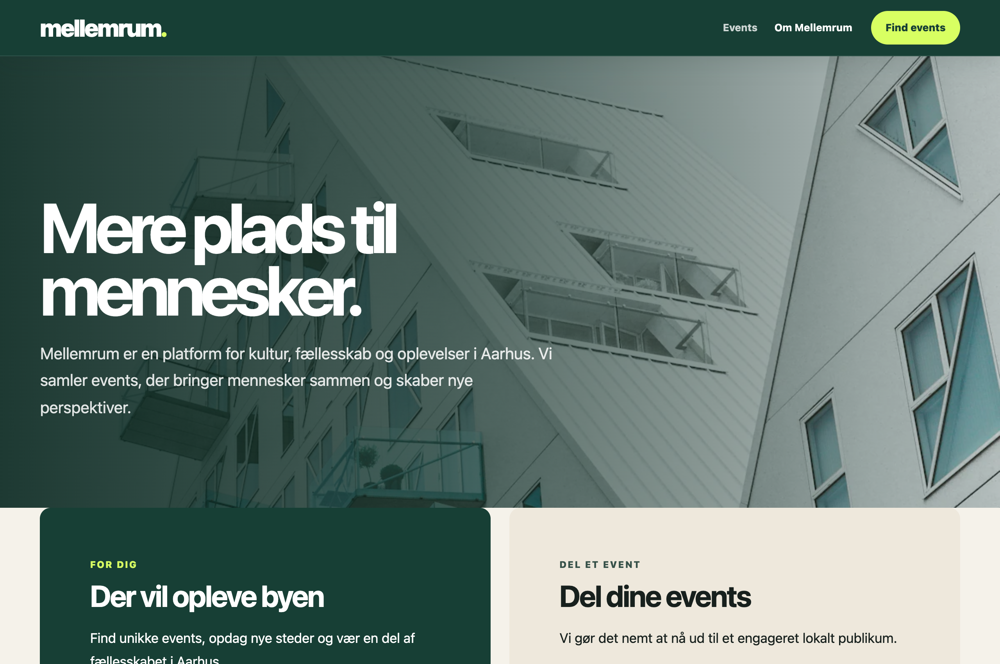
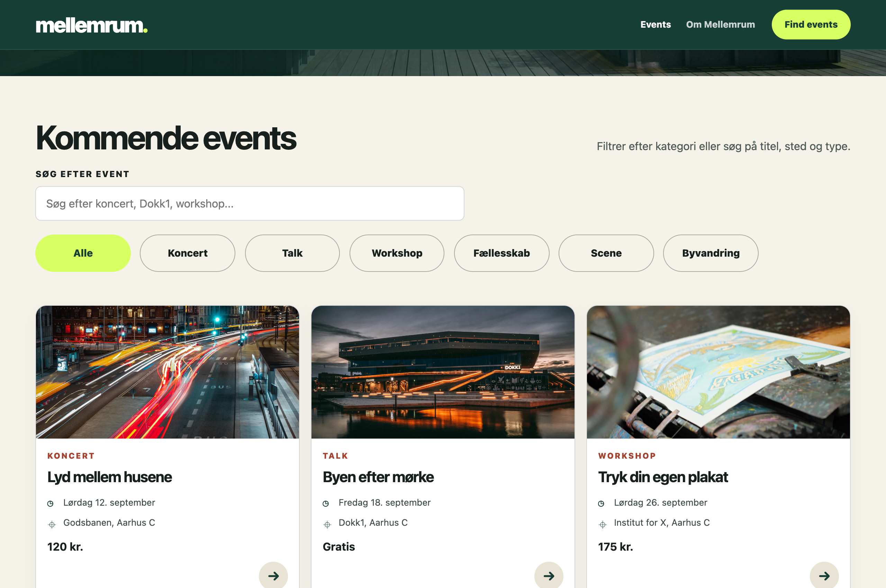
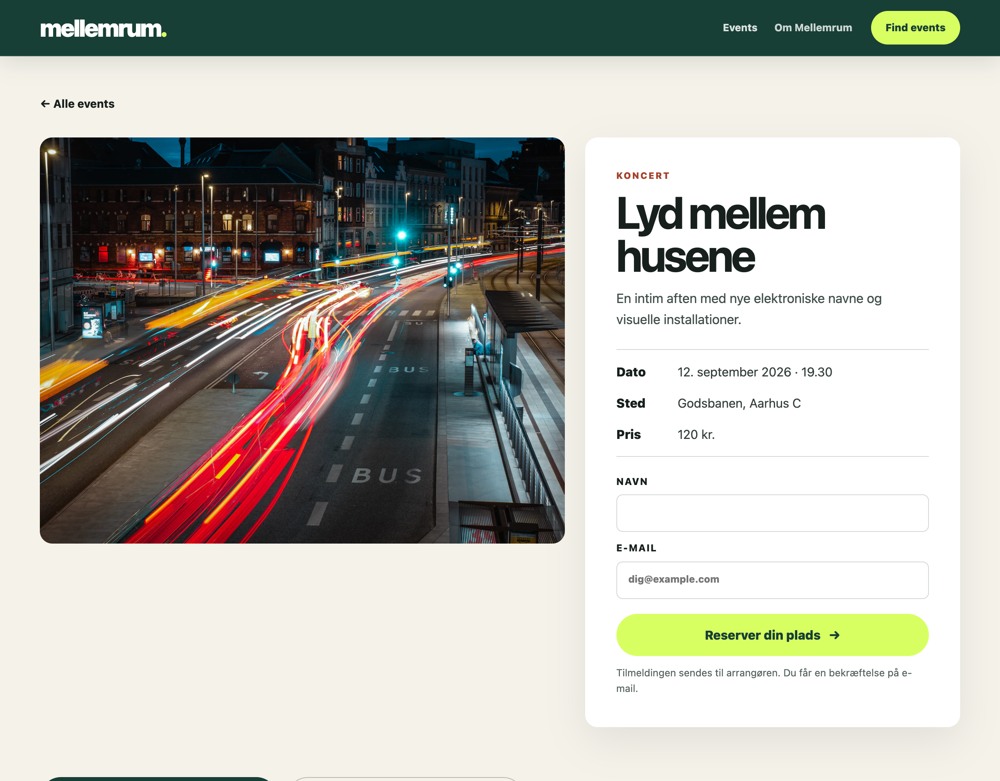
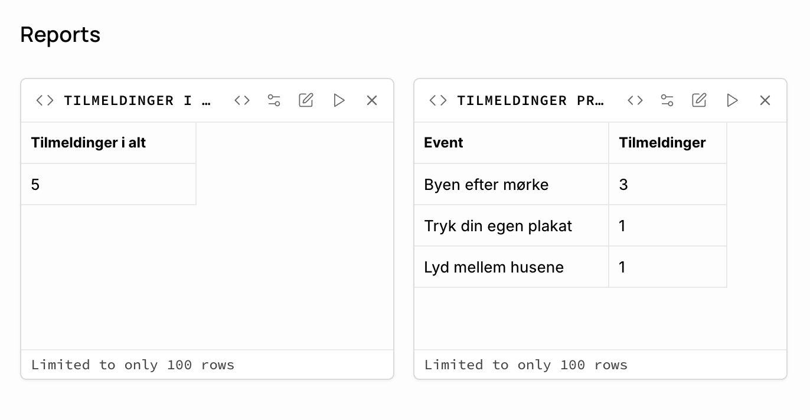
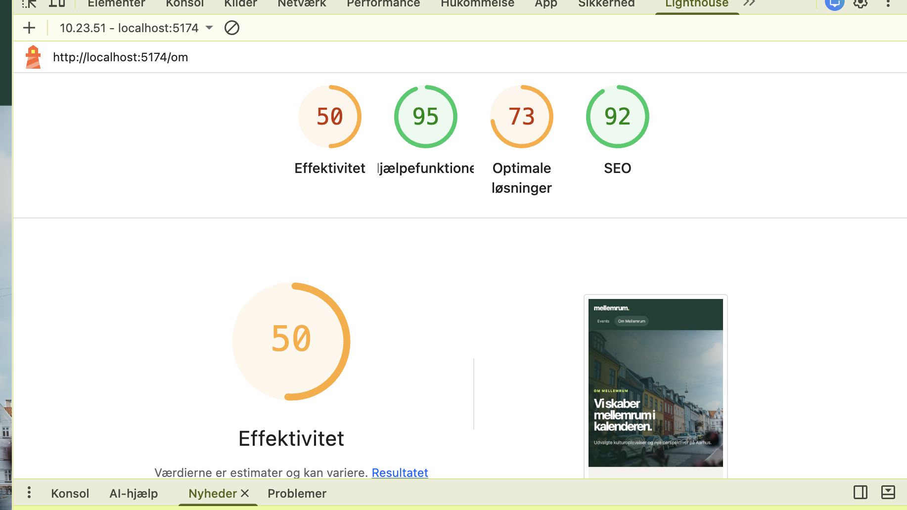
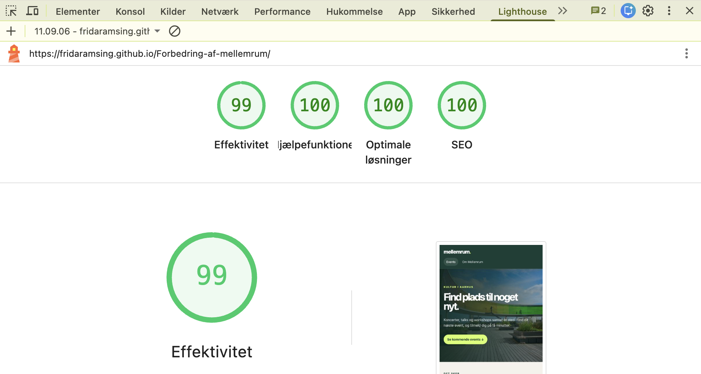

01 / React / Individuelt
Mellemrum.
Fra React-prototype til en mere stabil eventplatform.

Udgangspunktet
En lovende prototype.
Et ufærdigt brugerforløb.
Mellemrum hjælper besøgende med at finde og tilmelde sig kulturevents i Aarhus. Jeg overtog en React-prototype med uens interaktioner, en ufærdig tilmelding og problemer med publiceringen.
Jeg gennemgik brugerrejsen og prioriterede tilmelding og databaseforbindelse før navigation, søgning og feedback. Det var vigtigere at få kerneforløbet til at virke end at tilføje flere funktioner.
- Min rolle
- Individuel udvikling, brugerflade og kontrol
- Værktøjer
- React, Supabase, GitHub, Lighthouse
- Fokus
- Tilmelding, feedback og publicering
Originalen og mit redesign
Før og efter.

Åbner den valgte version i en ny fane.
01 / Find et event
Mindre søgen.
Flere oplevelser.
Forsiden fremhæver kommende events. Søgning og kategorier gør det lettere at indsnævre listen. En ny søgning nulstiller kategorien til »Alle«, så et gammelt filter ikke skjuler relevante resultater.
Ens afstande og faste placeringer af knapper gør næste handling lettere at finde.

02 / Reservér en plads
En formular med
forbindelse til databasen.
Besøgende kan tilmelde sig med navn og e-mail på eventsiden. Formularen sender data til Supabase. Her kontrollerede jeg, at tilmeldingerne blev gemt, og at rapporterne for det samlede antal og antal pr. event blev opdateret.
En besked efter tilmelding gør resultatet tydeligere. Automatiske bekræftelsesmails er ikke implementeret. Formularen lover stadig en mail, og den tekst skal derfor rettes.

Overblik over tilmeldinger.
Jeg kontrollerede, at Supabase gemte tilmeldingerne og opdaterede rapporterne. Billedet viser fem testtilmeldinger fordelt på tre events.

Lighthouse.
Jeg undersøgte løsningen med Lighthouse. Billederne viser en lokal Om-side og den publicerede forside. Da både sider og miljøer er forskellige, er det ikke en kontrolleret før/efter-måling.


Kontrol af løsningen.
Jeg forbedrede mobiltilpasning, formularfelternes etiketter, kontrast og feedback. Jeg tilføjede også lukning med Escape i dialogen til eventforslag og kontrollerede produktionsbyg og publicering på GitHub Pages.
Min efterfølgende gennemgang fremhævede tilmelding, søgning, feedback og et stabilt byg. Det var ikke en formel analyse før udviklingen. Lokale filer begrænser eksterne afhængigheder; et planlagt Supabase-kald er vedligeholdelse, ikke en garanti for oppetid.
Det tager jeg med.
En løsning er ikke færdig, fordi brugerfladen ser godt ud. Tilmeldinger skal gå igennem, feedback skal give mening, og publiceringen skal fungere.
Næste skridt er at forbinde eventforslag til databasen, tilføje bekræftelsesmails og undersøge tastaturnavigation, fejl og ydeevne nærmere.
Mulig værdi.
Besøgende kan få en mere tryg tilmelding, og arrangører kan bruge rapporterne i planlægningen. Dataintegration og rapportkontrol understøtter potentialet, men dokumenterer ikke flere tilmeldinger eller mindre administration.